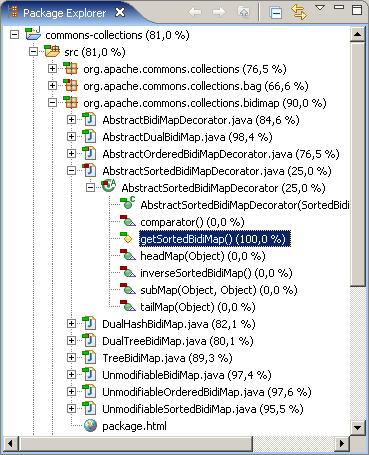

Note: This is an optional feature not enabled by default.
The Eclipse workbench has the concept of so called decorators which add graphical and textual information to elements shown in the workbench views. EclEmma provides coverage decorators for the currently active coverage session: A little green/red bar on the elements' icons and a percentage value next to the names.

The percentage shown is calculated based upon the instruction counters. Coverage decorators are only visible if there is an active coverage session and only shown for elements containing executable code, therefore e.g. not for abstract methods.
This optional feature can be enabled in the Eclipse preferences dialog: